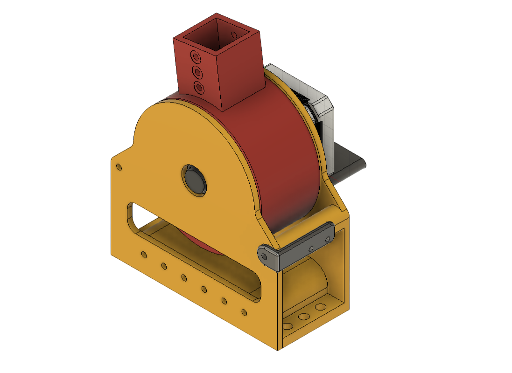
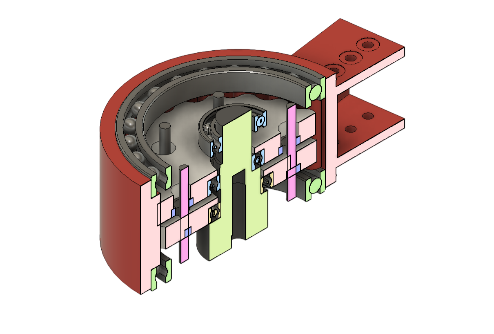
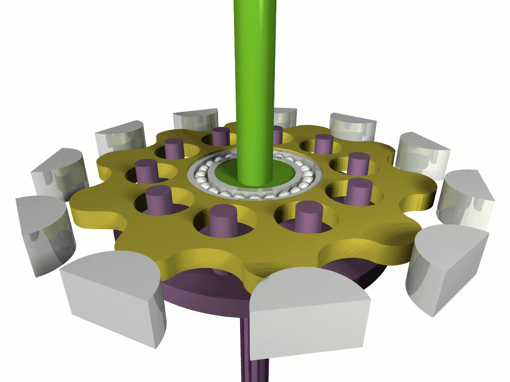
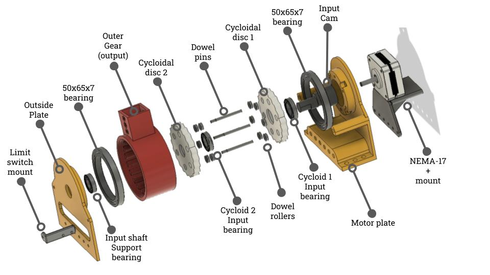

Cycloidal Gearbox
2026Cycloidal gearboxes are very good for 3D printing. They are compact, low on backlash, and don't have any small teeth that can break easily. This is a 20:1 cycloidal gearbox I designed for my robotic arm. It's easy to put together, strong, and cheap to build. The CAD and STL files are available on GitHub.

Specifications
- Gear reduction: 20:1
- Drive: NEMA 17 stepper motor
- Maximum torque: approximately 4.5 N·m
- Cost: approximately $40 CAD ($28 USD), excluding the motor and 3D-printed parts
Materials
- 1× NEMA 17 stepper motor
- 2× 50 × 65 × 7 mm bearings
- 1× 15 × 28 × 5 mm bearing
- 2× 12 × 21 × 5 mm bearings
- 12× 8 × 5 × 2.5 mm bearings
- 6× 3 × 30 mm metal dowel pins
- Silicone grease
- M3 heat-set inserts
- M3 bolts
- 3D-printed parts

How cycloidal gearboxes work
Cycloidal gearboxes use the eccentric motion of a disc with “bumps” around round lobes to slow rotation. They work especially well for 3D-printed gearboxes because their shape is far less likely to break when using weak plastic. Also, because of their shape, contact between the disc and outer lobes is always maintained, making backlash almost zero.

Cycloidal drive animation source
{kind=link}
Design
I chose to make the gearbox reduction 20:1, which gives enough torque to be useful in a robotic arm while still allowing it to rotate quickly. I used this Fusion 360 plugin to generate the cycloidal sketches. Since I needed the final gearbox to be fairly compact, one of my main considerations was the camshaft.
After a few trials, I ended with an input shaft that progressively gets smaller and uses progressively smaller bearings. This removes the need to screw multiple parts together to build the shaft. There is no bolt fastening the input shaft to the stepper motor, only very tight tolerancing, which is not ideal but has not caused any issues yet.
The stepper motor is screwed into an outer plate. Metal dowel pins inserted into the outer plates stay rigidly in place, which allows the outer gear to rotate. There are two identical cycloidal discs placed 180 degrees out of phase to reduce vibration and improve backdrivability. The motor can be controlled with any stepper driver and microcontroller. I'm using a DM552 driver and an ESP32.

